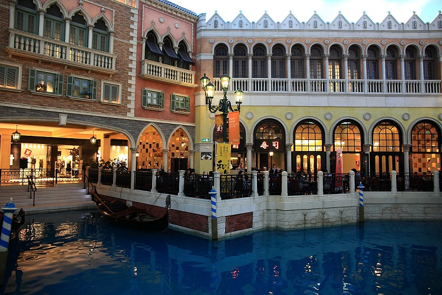

大型购物商场和百货公司
#大运河购物中心#
大运河购物中心是澳门最大型的室内购物中心，位于威尼斯人度假村酒店二层，云集超过350家购物商户、数十家食肆。商场内蓝色天顶上流动着白云，行驶着贡多拉的运河，欧式风格的建筑拱桥，让人仿佛穿越到了威尼斯。

图片：大运河购物中心
商场内的购物商户超过350家，种类包括时装、珠宝、饰物、礼品、服务、餐厅以至体育用品等，品牌相对齐全，从国际一线大牌CHANEL、DIOR、GUCCI到相对亲民的ZARA等，丰俭由人。 店铺的分布都取决于区域的设置，同一系列的店铺多数会分布在同一区域，当中只有少数是不跟从这一个惯性。
威尼斯人购物中心内有3条室内运河，这分别是大运河、圣路卡运河及马可孛罗运河，这3条运河互不相通，各运河中有多条贡多拉船往来穿梭，顾客可付费乘船游览各运河。这3条运河的设计意念源于威尼斯水乡的迷人景色为主题，运河周围充满威尼斯特色建筑群及拱桥，让人犹如置身于浪漫的威尼斯，享受异国风情
电话：+853-28828888； +853-81177840
营业时间
周日至周四：10：00-23：00
周五至周六：17：00-24：00
交通：澳门威尼斯人度假村酒店提供前往关闸、码头、机场的免费穿梭巴士。公交可乘坐15、21A、25、25X、26、26A、MT1、MT2、MT3、MT4和夜间路线N3。
地址：澳门威尼斯人度假村酒店
#T广场四季名店#
澳门T广场四季名店占地面积超过18万平方英尺，位于澳门路氹四季酒店内部，邻近澳门威尼斯人酒店（The Venetian® Macao Hotel）和澳门康拉德酒店（Conrad Hotel），为客户提供奢华购物体验以及一系列全球最受消费者欢迎的奢华品牌精品和提供定制专署限量版产品，包括：时尚、美容、腕表与珠宝以及酒类产品。
“时尚世界”为客户提供全球领先时尚品牌最受欢迎的商品，从成衣到高级皮革制品，范围涵盖面之广无其他商家可以企及；与此同时，“美容世界”拥有一系列世界上最负盛名的美容品牌，提供的产品包括化妆品、护肤品和各类香芬产品及拥有澳门最大的美颜中心。
除此以外，在“奢华世界”里，客户还可观赏到世界一流卓越品牌提供的精美腕表和珠宝，以及特制酒类定制精品。澳门T广场四季名店拥有面积最大也是最负盛名的尊誉贵宾室，会员能够尽享包括私人购物助理在内的世界顶级服务，及享受着100%的全球承诺保证，无论在全球各地哪家T广场购买的商品，售后服务中心都支持退款、修理和退货服务。
电话：+853-28282833
营业时间
周日至周四：10：00-23：00
周五至周六：10：00-24：00

图片：T广场四季名店
地址：澳门路氹金光大道®四季名店一层
#巴黎人购物中心#
巴黎人购物中心与四季名店、大运河购物中心、金沙广场共同组成了澳门金沙购物城邦，共有超过850间免税品牌商铺。巴黎人购物中心有时尚女装、男装、珠宝首饰、手表皮具、化妆护肤、糖果干货、儿童礼品以及体育运动等各种品牌一应俱全。
电话：+853-28828833
营业时间
周日至周四：10：00-22：00
周五至周六：10：00-24：00
注：各商铺营业时间不尽相同
图片：巴黎人购物中心
地址：澳门路氹连贯公路巴黎人度假村
#金沙广场#
相比四季名店的高端奢华，金沙广场则更适合家庭购物，商铺包括奢华童装及高贵流行商店，为这里适合家庭购物的舒适环境锦上添花，包括Aquascutum Junior， Armani Junior， Moschino Junior， Ralph Lauren Kids and UM Junior等。
首次进驻澳门市场的Zara Home和马莎百货也推出了一些符合大众口味的特别款式。商场内装潢以自然采光为设计重点，还有潺潺流水的瀑布景致，让购物过程更为舒适放松
营业时间
周一至周日10：00-23：00
注：各商铺营业时间不一
图片：金沙广场
地址：澳门路凼连贯公路金沙城中心
商铺市集和主题购物街
#大三巴街#
大三巴街是澳门有名的手信街，很多老字号的手信店，如钜记、咀香园等，都在这里有分店，如果要买化妆品，这里还有卓悦，所以若要买澳门手信，来这里就对了。
另外，街上的小吃猪扒包、蛋挞、胡椒饼也不能错过哦。 大三巴街非常热闹，各类澳门手信都在这里争相出售，每家店都有自己试吃的点心，可以任意品尝后再下决定哦，据说光试吃都能吃到饱。街道虽然不够宽敞，但干净整洁，街两边的老式建筑充满浓浓的欧洲风情，一路闻着扑鼻的烤肉乾香味，就算不饿也大动食欲。
图片：大三巴街
地址：澳门大三巴街
#官也街#
官也街临近龙环葡韵博物馆和威尼斯人度假村，是澳门第一个行人专用区。澳门政府将狭窄道路加以装饰，大量的餐厅、甜品店、手信店在这里集中，因此成为了澳门新兴的著名景点之一。
官也街虽然只有约115米长，但街内中西食肆林立，还有数间售卖当地特产、糕点的手信店，吸引了不少游客和澳门市区的居民。诚昌饭店的水蟹粥、莫义记的大菜糕、榴莲雪糕、和木糠布丁，都很值得品尝，很多港澳明星来这里都经常去光顾。
如果要购买特产糕点手信，人气最旺的莫过于钜记饼家，而被米其林推荐的晃记饼家也在这里，杏仁饼、凤凰卷、纽结糖、肉切酥、鸡仔饼、肉脯等等在这里应有尽有。
图片：官也街
地址：澳门官也街
#红街市#
红街市大楼以红砖砌成，远远看去十分醒目，建于1936年的大楼是目前唯一被列入澳门文物名录上的街市建筑，楼内共分三层，现在仍是澳门居民每天都会光顾的市场，人气很旺，是深入体验澳门市井生活的好地方。
街市大楼的通风和采光性能很好，总共分三层，地面位置（后花园）以蔬菜摊档为主，第一层（地下）售卖海鲜，第二层售卖鲜肉，另外也有一些水果、日用品摊位，商品通常价格实惠。出来后还可以前往位于东北面的龙华茶楼，它是有澳门现存唯一一家传统茶楼。
电话：+853-28210434
营业时间
每天约7：30-19：30
注：不同摊位时间不同
图片：红街市
地址：澳门罅些喇提督大马路
本地时尚品牌
#AURALO ARTE#
“AURALO ARTE”成立于 2014 年，由卢嘉庆及徐惠玲两位热爱时尚的人士所创立，“AURALO ARTE”钟爱把哲学故事情节带进时装，让情感转化为设计细节。女装风格借鉴男装元素，兼备时尚性及实穿性，把时装艺术转化在Ready To Wear系列中。
AURALO是由他们的时装设计老师所命名。由于钟爱黑色与彩色之间的美丽幻化，就像极光在黑夜中起舞一样；ARTE 每个细节都使用高级时装的制作方法，认为每件服装都是艺术品，故把品牌命名为“AURALO ARTE”。而品牌标志L在左，R在右，象征卢嘉庆及徐惠玲是“AURALO ARTE”左右手，缺一不可。
图片：AURALO ARTE
#MACONSEF#
拥有属於自己的品牌店是很多创作人的理想和抱负。在澳门，越来越多人对设计产生浓厚兴趣，Ella（李惠晶）就是其中一个追梦人。曾经从事动画设计的Ella毅然放弃全职工作，决定追寻自己的梦想，专心创作。现为自由设计师的她，修读了生产力中心为期年半的时装设计课程，最终以优秀的成绩加入了「CPTTM时装孵化计划」，有机会参与生产力中心旗下品牌「MaConsef」的设计。「MaConsef」意为「澳门概念」，这个计划孕育了众多澳门本地的优秀设计师。
图片：MaConsef
#WORKER PLAYGROUND#
澳門时裝品牌 WORKER PLAYGROUND 成立于 2012 年。品牌名字概念来自澳門工人球场。昔日的澳門工人球场除了为市民提供运动的空间外，亦是一些大型活动的举办场地，因而带着浓厚的本土意义及已成为澳門市民大众集体回忆。品牌设计风格以美式传统流行服饰为设计蓝本，加入大量机车，摇滚元素。
图片：WORKER PLAYGROUND
特色礼品
#杏仁饼#
在澳门可以买些当地特产带回家做手信，不妨去官也街挑一挑。官也街是澳门很兴旺的步行街，食品店、甜品店等店铺都集中在这里。你可以买到著名的“钜记手信”，店内特产品种多而且几乎每种产品都提供试吃，可以先尝后买，尤以杏仁饼、花生糖、海苔肉松蛋卷、猪肉脯等品种最受欢迎。
推荐购买地点：钜记饼家（福隆新街总店） 、 Club Monaco（威尼斯人度假村店） 、 钜记手信（议事厅前地店） 、 福茗堂茶庄（澳门金沙城中心广场店）
图片：杏仁饼
#葡萄酒#
在购买葡萄酒之前，对葡萄酒略知一二，学会区分那些事赝品、那些葡萄酒是哪个区域，或是品尝上乘的葡萄酒，去一趟旅游活动中心的葡萄酒博物馆就可以了，整个澳门所有的超级市场，甚至是路边的，都有出售葡萄酒，在机场、码头等一些免税店里均有葡萄酒出售。
推荐购买地点：来来超级巿场（澳门广场店）
图：葡萄酒
#海味干货#
在澳门大规模的海味店一般都集中在新马路及高士德大马路等购物旺区，出售不同等级的鱼翅、冬菇、虾米、鲍鱼以及干瑶柱等，几乎全澳各区都有店铺出售海味、香料及其它传统的中国食品和药材。 这些店铺业务兴旺，有不少本地顾客及游客光顾。
推荐购买地点：国泰参茸燕窝海味行（澳门大街72号）
图：海味干货
退税
澳门购物是免税的，因此游客不用担心退税的问题